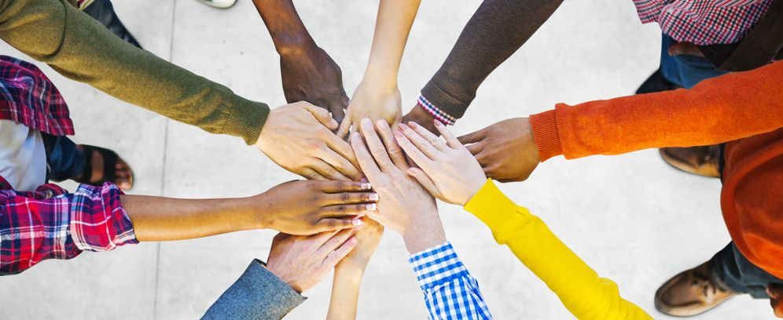

We are Kalyani Foundation, one of the best caring and affordable drug, alcohol and mental illness rehabilitation centre in West Bengal located near Kolkata in Kalyani.
-
- Our Mission
- In todays world addiction is becoming one of the major problem for our society and our lives. Especially the youths, who are the future of our country are being addicted to substances. Work pressure, living standards, unemployment, family problems, depression are some of the reasons to push someone into a wrong direction. But once they got into it, they start to figure out that they are being addicted and ruining their life day by day. We know they try to come to back to a sober life but they can't. Our mission is simple, helping them coming back and get a healthy lifestyle.
- people don't understand why or how other people become addicted to drugs and why they are not quitting it. They may mistakenly think that addict lack moral principles or willpower and that they could stop their drug use simply by choosing to. But in reality, drug addiction is a complex disease, and quitting takes more than good intentions or a strong will. Our work is to give them the treatment that they actually need.
- Our purpose is to make a drug free society and that's what we are constantly trying to do since our inception. Now our rehab centre is situated in a pleasant environment at Kalyani, Nadia, West Bengal.
- Our empathetic, highly trained, experienced, and licensed alcohol and drug counselors have successfully treated many people and built a long record of helping individuals through rehab.
- If you or a loved one are suffering from an addiction, contact us today! We are available 24 hours a day, 7 days a week. Start your path to recovery today!